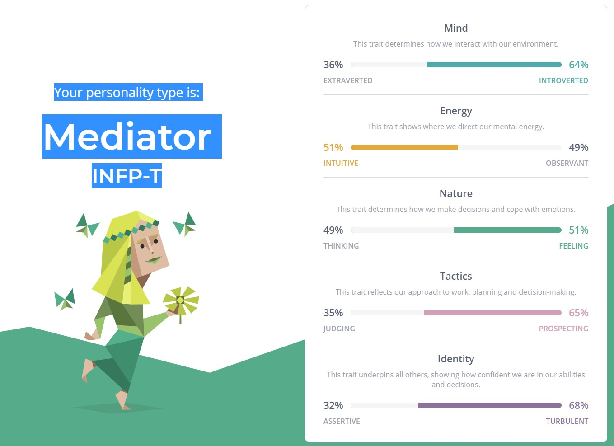
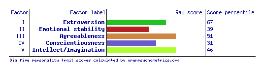

According to the Myers-Briggs Type Indicator Test my personality type is ‘Turbulent Mediator’, which means I am an Idealist that is searching for ways to make things better. It says my Strengths are being Creative, Passionate, Open-Minded and Flexible among other traits and my Weaknesses are taking things personally, being too altruistic, idealistic and impractical. In the description of this Personality type is mentions wanting to be an author as a child, which I definitely did.
The code result from the test was INFP-T, which is the code for my 5 most dominant traits. These traits are Introverted, Intuitive, Feeling, Prospecting and Turbulent. These are definitely things I would associate with myself.
My Role is a Diplomat, meaning I am striving for change, looking for a higher purpose and taking big risks or leaps to get things done.
My Strategy for achieving my goals is Constant Improvement, which is ironically the exact phrase I have been using for almost 2 years now to motivate myself daily. The Tests says that Constant Improvers tend to be sensitive and introspective, being more comfortable on their own and avoiding uncomfortable and stressful situations. Having a strong sense of self doubt is also attributed to those with this strategy as well as looking for what the right career is for them. This is true about me and is one of the big motivators for me doing this course.
The Myers-Briggs Type Indicator Test can be taken here
The Results from this test almost seem to contradict some of the previous tests.
My Score for Extroversion is quite high, despite Introversion being mentioned on previous tests.
My Emotional Stability is my lowest score which does not surprise me as I do sometimes let my mood and feelings control my actions, however this is something I am looking to improve.
Agreeableness was my second highest score, I am usually rather easy going and do not want to cause trouble, but if it needs to be done, I can be more critical. So, I think that is accurate.
Conscientiousness was my second lowest score which means I more impulsive and disorganised. This is interesting because in many ways I am the opposite, but when it comes to working on a project, I can quickly slip from being organised to doing things on the fly.
For Intellect/Imagination I was almost equal with Agreeableness. This implies that I am open to new experiences and do not follow convention for the sake of it. Which sounds exactly like me.
The Big Five Personality Test can be taken Here
Overall I think these tests have shown that although I strive to be open, honest and involved in a group work situation, there is a big part of me that will want to shy away and be that introvert that I know I can be sometimes. When forming a group or a team I should consider who I choose, so that they can encourage me to be that involved and open person that I want to be.